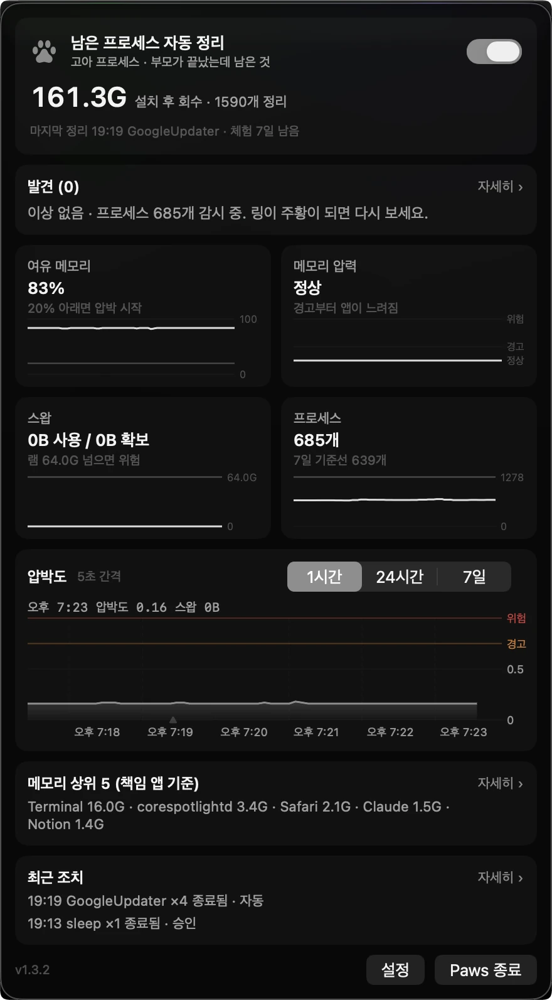
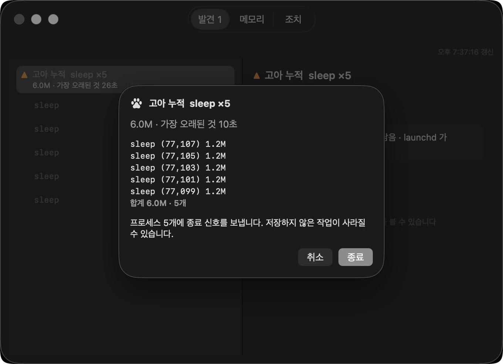
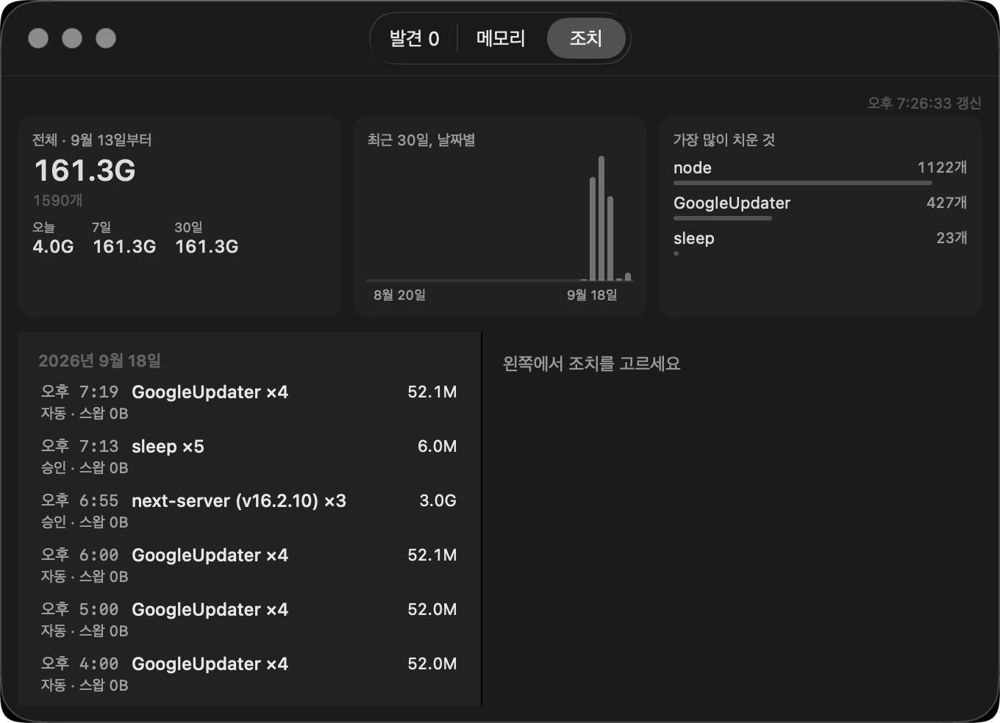

실제 화면
앱은 이렇게 생겼습니다
아래는 전부 이 글을 쓴 맥에서 찍거나, 앱이 아이콘을 그리는 코드로 그대로 뽑은 것입니다. 다시 그리거나 숫자를 꾸민 것이 없습니다.
01
메뉴바에 이것 하나
평소에 보이는 것은 발바닥 하나입니다. 숫자를 띄우고 싶으면 설정에서 켜면 됩니다.
둘린 링이 메모리 상태를 말합니다.
평상시엔 조용히, 급하면 색으로.
 숫자 끔 (기본)
숫자 끔 (기본)

숫자 켬 평상시
평상시 경고
경고 위험
위험 감시 중단
감시 중단 정리 중
정리 중
02
눌렀을 때
지금 상태가 한 장에 다 들어옵니다. 스크롤할 것이 없습니다 — 되찾은 양, 발견한 것, 여유 메모리와 스왑, 프로세스 수, 압박도 그래프, 마지막 조치, 그리고 맨 아래 설정과 종료까지.
이 맥은 설치 후 161.3 GB를 돌려받았습니다.
1,590개를 정리하고서.

03
끝내기 전에
정리를 누르면 기록 창이 열리고, 무엇을 끝내는지 목록으로 보여준 뒤 다시 묻습니다. 고른 것만 끝납니다.
“저장하지 않은 작업이 사라질 수 있습니다”
— 끝내기 전에 이 말을 먼저 합니다.

04
무엇을 언제 왜
끝낸 것은 전부 남습니다. 날짜별로 무엇을 몇 개 끝냈고 얼마나 되찾았는지. 1년치를 보관합니다.
가장 많이 치운 것 — node 1,122개,
GoogleUpdater 427개.

2026년 9월 18일, macOS 26 · Mac Studio(M4 Max, 64 GB)에서 Paws 1.3.2 로 촬영. 수치는 그 기계의 실제 값입니다. 메뉴바 아이콘 여섯 장은 앱이 아이콘을 그리는 코드(PawGauge·MenuBarLabel)로 직접 출력했습니다 — 화면을 찍으면 배경화면이 비쳐 흐려지기 때문입니다.